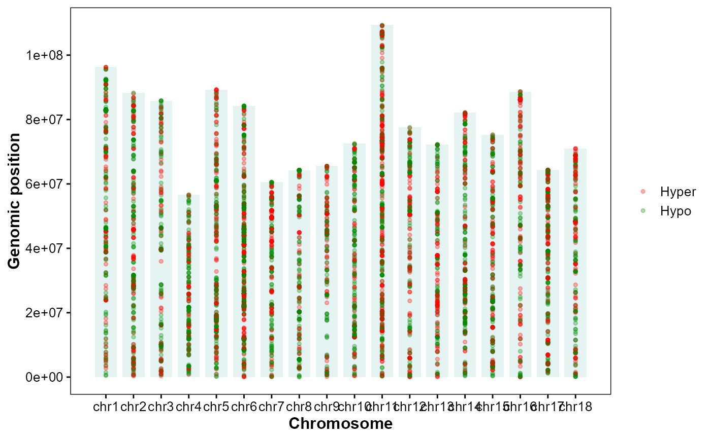

Plot DMGs hyper/hypo along chromosomes.
Usage
plot_dmg_exp(
dmr_file,
orientation = "horizontal",
chrom_alpha = 0.1,
chrom_color = "#008888",
bar_height = 0.8,
point_size = 1,
point_alpha = 0.3,
hyper_color = "#ff0000",
hypo_color = "#008800",
mark_style = c("point", "line"),
line_width = 0.6,
line_height = 0.8
)Arguments
- dmr_file
DEG table from MethylKit analysis.
- orientation
Coordinate orientation. ("horizontal", "vertical").
- chrom_alpha
Chromosome bar alpha. (0.1).
- chrom_color
Chromosome bar color. ("#008888").
- bar_height
Chromosome bar thickness. (0.8).
- point_size
Point size. (1).
- point_alpha
Point alpha. (0.3).
- hyper_color
Color for hyper-methylated. ("#ff0000").
- hypo_color
Color for hypo-methylated. ("#008800").
- mark_style
Marker style for DMGs. ("point", "line").
- line_width
Line width when
mark_style="line". (0.6).- line_height
Line height relative to bar radius. (0.8).
Examples
# DMR results
dmr_file <- system.file(
"extdata",
"example.dmr",
package = "GAnnoViz")
# Plot DMG expression
plot_dmg_exp(
dmr_file = dmr_file,
orientation = "horizontal",
chrom_alpha = 0.1,
chrom_color = "#008888",
point_size = 1,
point_alpha = 0.3,
hyper_color = "#ff0000",
hypo_color = "#008800",
mark_style = "point",
line_width = 0.6,
line_height = 0.8)
